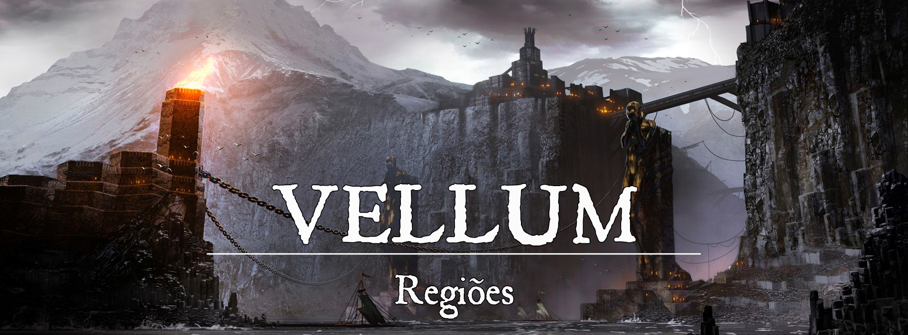

Vellum
Descrição
A cidade de Vellum foi palco dos conflitos mais sangrentos de Gronnemar, consumida várias vezes pelo caos e pela chama da ambição. Vellum se ergueu após cada conflito, mas as cicatrizes deixadas permanecem até os dias atuais. As duas enormes estátuas vistas no porto, acorrentadas pelo pescoço, são a maior marca do passado sombrio da cidade das correntes.
Mesmo nos dias atuais, Vellum mantém-se como uma cidade perversa. Nas costas de um enorme rochedo, ergue-se o Porto Baixo, uma porção enorme da cidade acessível principalmente pelo oceano. No topo do rochedo é vista a Cidade Alta, alcançada por longos degraus de pedra a partir do Porto Baixo. Não importa o local, Vellum é uma cidade perigosa, fervilhando com assassinos, ladrões e nobres corruptos. Todavia, esse bando tem uma característica em comum: todos buscam subir de vida em Vellum.
Descrição Visual:
unknown (54).png |Vellum, a Cidade das Correntes
{kind=link}
Aqueles que chegam a Vellum por mar presenciam um ambiente cinzento e hostil. O enorme rochedo é sem vida e parece mais uma enorme muralha com uma única passagem. Navios naufragados permanecem largados pelas águas das docas, seus mastros erguendo como lápides sobre o mar. A visão se torna pior com a presença de duas enormes estátuas acorrentadas, com correntes amarradas aos pescoços que se estendem até a Ilha do Enforcado. O Porto Baixo pode ser visto iluminado por incontáveis lamparinas e velas, uma única cor em meio ao ambiente cinzento de Vellum. A Cidade Alta, erguendo-se no topo do rochedo, não difere muito do Porto Baixo em questão de cores. As enormes mansões da nobreza podem ser vistas por todos aqueles que chegam na cidade pelo porto, um lembrete de que sua população está acima dos demais.
O Porto Baixo se estende pela costa e adentra a passagem formada pelo rochedo cinzento. As estátuas são como um portão para Vellum. É um lugar miserável em muitos bairros, mas com um comércio fervilhando com a ida e vinda de incontáveis navios mercantes. As construções da cidade foram erguidas com tijolos de barro e a maioria é grudada uma à outra ou possuindo mais de um andar. Antigamente, essas mesmas casas eram usadas pelos escravos criados em Vellum, portanto, são lugares dificilmente confortáveis, quase sempre abafados.
A Cidade Alta pode ser alcançada pelo Porto Baixo através de uma longa escadaria de pedra construída no rochedo cinzento ou por uma estrada vinda pelo oeste de Vellum. No alto, os nobres vivem em suas luxuosas mansões com a certeza de que estão acima dos pobres de Porto Baixo. É um local mais organizado, mas dificilmente mais bonito do que os bairros nobres de outras grandes cidades de Gronnemar. No entanto, a nobreza de Vellum se esforça para manter a aparência.
Vellum também conta com um lugar chamado o Subterrâneo. O Subterrâneo, como o nome sugere, foi construído nas entranhas da cidade, mas sem a permissão de autoridade alguma. É o lar do povo mais miserável da cidade, de ladrões e contrabandistas, e também um esconderijo para fugitivos. Soldado algum ousa se aventurar no Subterrâneo, e mesmo os habitantes de Porto Baixo temem explorar o local.
E além dessas principais localidades, também há a Ilha do Enforcado, que no passado foi a mais terrível prisão de escravos de toda Gronnemar. A ilha continua cumprindo seu papel como prisão, mas não mais para escravos. Os prisioneiros mais perigosos de Vellum e de Gronnemar são enviados para a Ilha do Enforcado, onde possuem pouca ou nenhuma esperança de fuga. A ilha inteira possui uma costa pedregosa e pouca vegetação, e só pode ser acessada através de barcos.
Sociedade
População:
Como na maior parte de Gronnemar, os humanos são a maioria da população. Ainda assim, é possível encontrar membros de diversas outras linhagens em Vellum, a maioria descendente dos escravos que foram libertados há muito tempo. Dá-se um grande destaque aos draconatos, goblinóides, tabaxis e orcs.
Cultura:
Viver em Vellum é visto por seus habitantes mais aventureiros como uma jornada para crescer na cidade. Mercenários e aventureiros buscam fazer seus nomes nas ruas de Vellum, atuando em diversas operações (ilegais ou não). Alguns sequer se importam em morrer cedo, portanto que consigam fazer com que seu nome seja lembrado por Vellum.
Aqueles que vêm de fora, forasteiros na cidade, logo compreendem esse “jogo” e tentam se adequar às regras.
Caráter:
Vellum é uma cidade violenta, não sendo estranho que seus habitantes desconfiem de forasteiros. Mercadores e mercenários fazem tudo por algumas moedas de ouro e dificilmente se importam com a lei. Para sobreviver em Vellum é preciso aprender sobre a cidade e suas artimanhas, de acordo com os próprios vellunianos.
Datas e Festividades:
Religião:
Existem duas deusas que são oficialmente veneradas em Vellum: Vesunna e Moira. Vesunna, como a deusa da sorte, é venerada para trazer boa fortuna, enquanto Moira, deusa do azar, é venerada para afastar o infortúnio. Apesar de apenas essas duas deusas serem a religião oficial de Vellum, diversos outros deuses são venerados em Porto Baixo e Subterrâneo, principalmente Endring, Makrumm Pratad’Ouro, Tarwulf e Voss. Cultos sombrios também espreitam nas sombras de Vellum, agindo em nome de deuses perigosos como Arachne, M’nzog e Yhasthur.
Economia
A exploração de minas de prata e gemas preciosas em Vellum, desde seus primórdios, é essencial para a economia da cidade. Durante gerações, os artesãos de Vellum se focaram em criar poções mágicas, remédios e até mesmo bombas. Vellum é conhecida por seus canhões que misturam magia e alquimia.
Serviços:
Governo
Vellum é governada pelo Visconde desde sempre, com o título sendo passado hereditariamente. Todavia, o sangue do primeiro Visconde se perdeu há muito tempo e durante uma época a cidade foi governada por militares (mais especificamente pelo comandante da Salvaguarda) que alegavam proteger e manter funcionando Vellum.
Poderio Militar:
As principais forças de Vellum são compostas pelos soldados que agem em nome do Visconde. A Salvaguarda é um pequeno exército fortemente equipado e treinado para lidar com diversas ameaças. O Escudo é a guarda da cidade, liderada por um capitão e com soldados que atuam na Cidade Alta e em Porto Baixo. Vellum também conta com uma frota de navios de guerra equipados com poderosos canhões mágicos e com suprimentos destrutivos de alquimia. A Salvaguarda é especialista no uso desses alquímicos (que variam entre explosivos, poções de cura ou venenos).
Conflito
A violência está presente em cada rua e esquina de Vellum, não importa o bairro. Nobres conspiram uns contra os outros, guardas corruptos assediam os habitantes de Porto Baixo e mercadores contrabandeiam produtos perigosos e, nos piores casos, escravos para outras nações. Perambular em Vellum durante a noite é como implorar para ser assaltado, esfaqueado ou contrabandeado. No entanto, os mais destemidos afirmam que é preciso saber andar em Vellum durante a noite se quiser chegar a algum lugar.
Organizações Relevantes
Locais Relevantes
O Enforcado: O Enforcado é a taverna mais popular do Porto Baixo, visitada por todo o tipo de gente. A comida é uma surpresa diária, mas as pessoas visitam o Enforcado por causa de seu quadro de missões. Frequentemente alguns serviços precisam ser feitos em Vellum e sempre há algum mercenário ou aventureiro disposto a ganhar alguns trocados.
NPCs Relevantes
unknown (55).png |Solomon Dumat, o Visconde de Vellum
{kind=link}
Solomon Dumat, o Visconde de Vellum: O visconde de Vellum é um homem preocupado com a cidade, mas visto como fraco por muitos nobres. Solomon está longe de ser carismático e suas decisões raramente são tomadas individualmente. É um homem muito ligado aos estudos da alquimia, mas não nunca coloca suas ideias em prática. A esposa de Solomon, Isabel, faleceu devido a uma rara doença, e desde então o visconde recusou-se a casar novamente. Mas há quem diga que o visconde possui alguns bastardos espalhados por Vellum.
unknown (56).png |Anastácia Dumat, herdeira de Vellum
{kind=link}
Anastácia Dumat, herdeira de Vellum: A única filha de Solomon Dumat, portanto, sua herdeira. Anastácia dedica seu tempo aos estudos para tornar-se uma governante mais digna do que seu pai. Apesar de sua sagacidade, Anastácia é tão tímida quanto seu pai, e há quem duvide que se torne uma boa líder.
unknown (57).png |Azorius var Loyset, o Conselheiro do Visconde
{kind=link}
Azorius var Loyset, o Conselheiro do Visconde: Azorius é o braço direito e conselheiro do visconde, além de também ser versado nas artes arcanas. Azorius é um caedronianos treinado na Academia Escarlate. Não é um homem ambicioso e, assim como o visconde, preocupa-se com a situação de Vellum. Azorius também ensina a filha do visconde sobre magia.
unknown (58).png |Frank, o Cara do Balcão
{kind=link}
Frank, o Cara do Balcão: Frank é dono do Enforcado e também o barman. A taverna é sempre movimentada, mas poucos se arriscam a causar confusão, pois conhecem a reputação de Frank, o Cara do Balcão. As lendas de Frank costumam variar bastante, mas todas são assustadoras. Dizem que ele matou um homem com um lápis, ou que ele pescou um tubarão com uma lança, e, a melhor de todas, que ele venceu o lendário Gigante Cinza em uma queda de braço. A verdade é que Frank é só um cara normal… ou não.
Origem
Vellum é uma das cidades mais antigas de Gronnemar, originada em uma época próxima da queda do Império de Elselenor. Mesmo antes de consolidar-se como cidade, Vellum abusou da escravidão. Os piratas foram os primeiros vellunianos, os fundadores de uma nação construída com sangue e os ossos de incontáveis escravos. Com uma frota considerável para a época, eles exploraram a costa leste de Gronnemar e trouxeram incontáveis escravos para a Ilha do Enforcado. Os principais escravos, no entanto, eram os elfos remanescentes do Império de Elselenor.
Com um pouco da magia élfica e com a força de centenas de escravos, Vellum foi construída. Porto Baixo foi posteriormente construído para abrigar os muitos outros escravos que viriam com a exploração dos vellunianos. A cidade cresceu com esse mercado e utilizando a mão de obra escrava.
Posteriormente, Vellum se aliou a Topázio e Ehremyth para juntos controlarem o mercado de escravos e subjugar o restante de Gronnemar. Essa aliança ficou conhecida como a União de Três. Logo, toda Gronnemar entrou em um terrível e duradouro conflito, a Guerra das Correntes. A União de Três passou a buscar escravos em nações cada vez mais distantes, até finalmente chamarem a atenção de Ascalon (que já era um reino poderoso na época). Foi então que Ascalon convocou sua Marcha Áurea e avançou contra a União de Três ao lado de seus inimigos.
Durante essa parte da guerra, Vellum foi o palco da batalha mais sangrenta vista em Gronnemar. O caos tomou conta da cidade antes mesmo de Ascalon ter alcançado os muros de Vellum. Os escravos planejavam se rebelar contra seus mestres, mas os planos foram descobertos antes disso. Então, em um ato de insanidade, os mestres de escravos ordenaram a morte de todos os escravos de Porto Baixo e da Ilha do Enforcado. Houve resistência pelo lado dos escravos, que conseguiram resistir até a vinda de Ascalon. Todavia, foi nesse momento que o caos se instaurou. Para impedir o avanço das forças ascalonitas, os mestres de escravos começaram a atirar explosivos alquímicos nas tropas (aliadas e inimigas). Em pouco tempo, uma cortina de fumaça cobriu a cidade e obrigou os soldados a lutarem sem visão alguma. Os ascalonitas, ao lado dos inimigos da União de Três, foram capazes de tomar Vellum nessa batalha, apesar da cidade ter sido quase inteiramente destruída no processo.
Com a vitória de Ascalon sobre a União de Três, a escravião em Gronnemar foi legalmente abolida. Vellum, quase inteiramente destruída, precisou ser lentamente reconstruída pelos remanescentes e por vizinhos interessados em seu potencial.